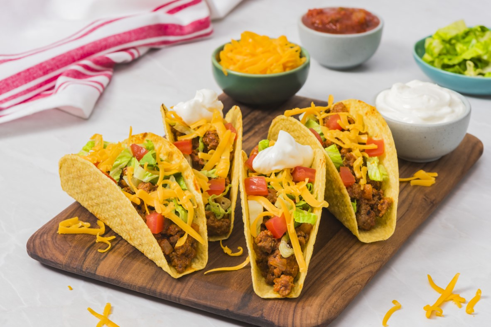

Tacos

Four beautifully made tacos.
Tacos are a fairly simple food that requires you to put your favorite ingredients inside of either a soft or a hard shell.
- Hard tacos shells
- Ground beef
- Lettuce
- Salsa
- Cheese
These are the steps you need to take to enjoy this food!
- First you need to have the ground beef cooked before you begin
- Once the ground beef is cooked, place the meat inside of your taco shell
- Next, add whatever your favorite ingredients might be in whatever order you would like
- Last thing to do is just simply dig in! Enjoy your fantastic food